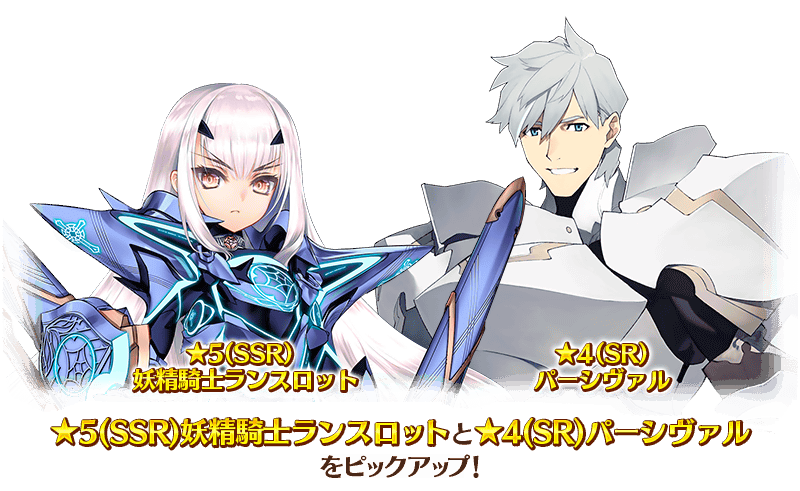
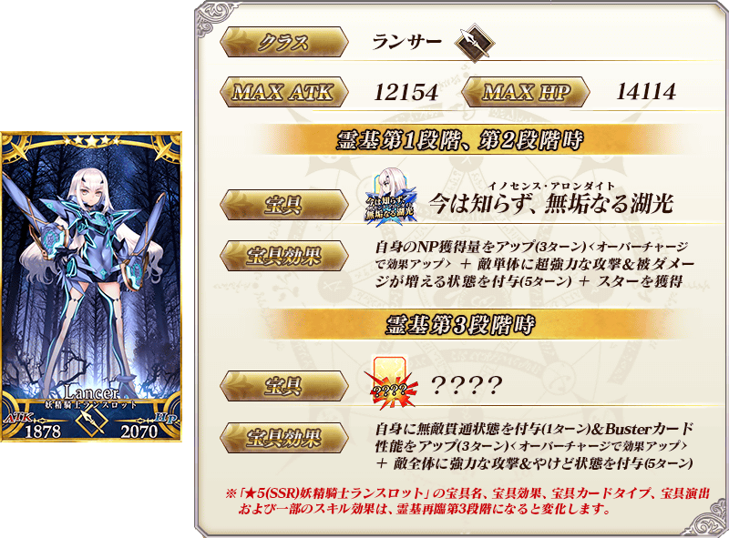
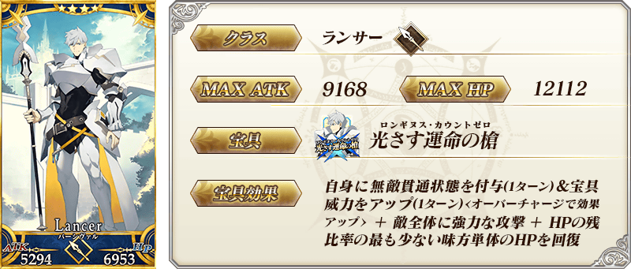
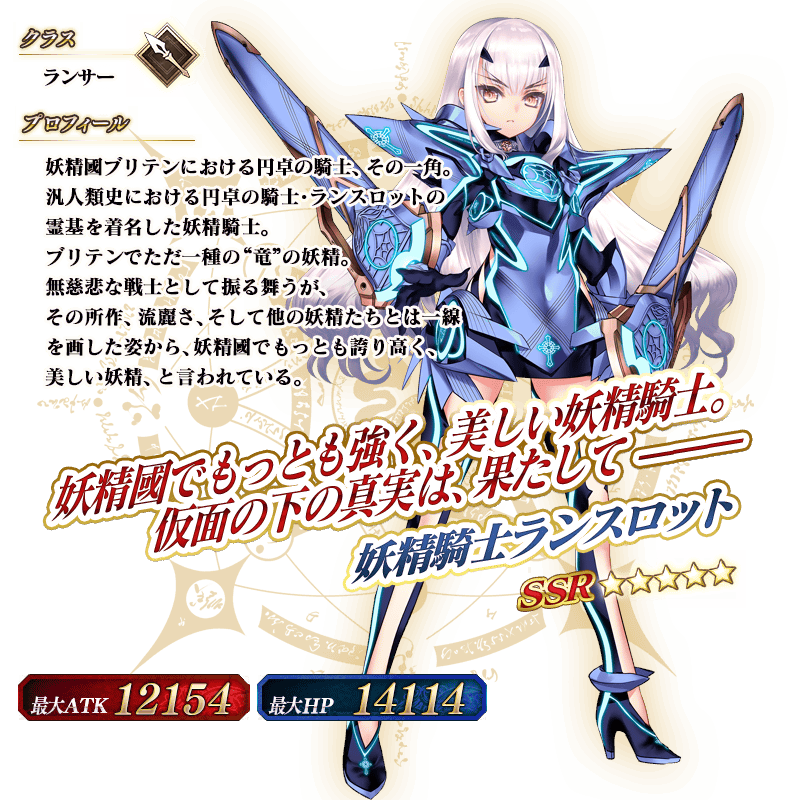
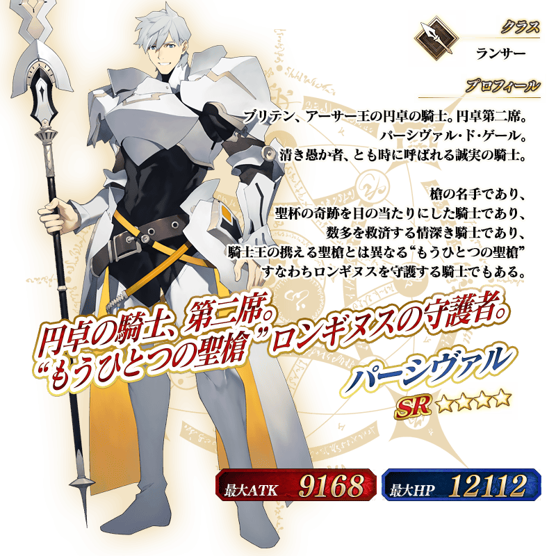

◆「阿瓦隆・勒・菲Pick Up3召喚」期間◆
期間:2021年7月14日(三) 19:30～7月28日(三) 11:59
為了記念第2部 第6章「Lostbelt No.6 妖精圓卓領域 阿瓦隆・勒・菲 星辰誕生之刻」(後篇)的開幕，舉辦期間限定「阿瓦隆・勒・菲Pick Up3召喚」！ ※就算未滿足主線關卡開放條件的狀態也能進行本召喚。
從第2部 第6章「Lostbelt No.6 妖精圓卓領域 阿瓦隆・勒・菲 星辰誕生之刻」(後篇)關聯從者之中，新登場2位的從者Pick Up！

▼期間限定從者
・★5(SSR)妖精騎士蘭斯洛特
▼新登場從者
・★4(SR)帕西瓦爾
Pick Up期間中，Pick Up對象從者的出現機率提升！
詳情請在聖晶石召喚畫面左下的召喚詳細確認。
11次召喚中確定1張★4(SR)以上和確定1位★3(R)以上的從者！ ※確定★4(SR)以上包含從者和概念禮裝。 ※本頁面皆為開發中圖片。會有與實際圖片相異的情況。
◆有關從者的注意◆
※下述的從者在Pick Up期間結束後不會追加到故事召喚。
・★5(SSR)妖精騎士蘭斯洛特
※下述的從者自Pick Up期間結束後的2021年7月28日(三) 12:00，追加到故事召喚。
・★4(SR)帕西瓦爾
 ※「★5(SSR)妖精騎士蘭斯洛特」，只限靈基再臨第1階段或第2階段的情況，在戰鬥中使用特定技能的話會變化成靈基再臨第3階段，可變化一部份技能的效果與寶具效果。另外，以技能效果變化成靈基再臨第3階段，在該場戰鬥中使用同様技能後不會返回第1・第2階段。 ※靈基再臨至第3階段後，想使用第1・第2階段時的寶具及技能的情況，於從者詳細畫面將戰鬥角色的設定變更成第1階段或第2階段才能使用。 ※特定靈基再臨階段開放前，「變化後的寶具卡」的立繪的一部份不會顯示。 ※「★5(SSR)妖精騎士蘭斯洛特」的靈基再臨第3階段包含「Lostbelt No.6 妖精圓卓領域 阿瓦隆・勒・菲 星辰誕生之刻」的劇透。敬請注意。
 ※上述「★4(SR)帕西瓦爾」的卡面為靈基再臨第1階段。
 ※「★5(SSR)妖精騎士蘭斯洛特」的靈基再臨第3階段包含「Lostbelt No.6 妖精圓卓領域 阿瓦隆・勒・菲 星辰誕生之刻」的劇透。敬請注意。
 ※上述「★4(SR)帕西瓦爾」的立繪為靈基再臨第1階段。
介紹在本召喚Pick Up的2位從者寶具演出！
2位新從者的寶具演出於一部份裝置有對應全螢幕顯示。
【★5(SSR)妖精騎士蘭斯洛特】
【★4(SR)帕西瓦爾】
關於主線關卡第2部 第6章「Lostbelt No.6 妖精圓卓領域 阿瓦隆・勒・菲 星辰誕生之刻」(後篇)的詳情，請自下述橫幅確認。
■第2部 第6章「Lostbelt No.6 妖精圓卓領域 阿瓦隆・勒・菲 星辰誕生之刻」(後篇)詳細情報